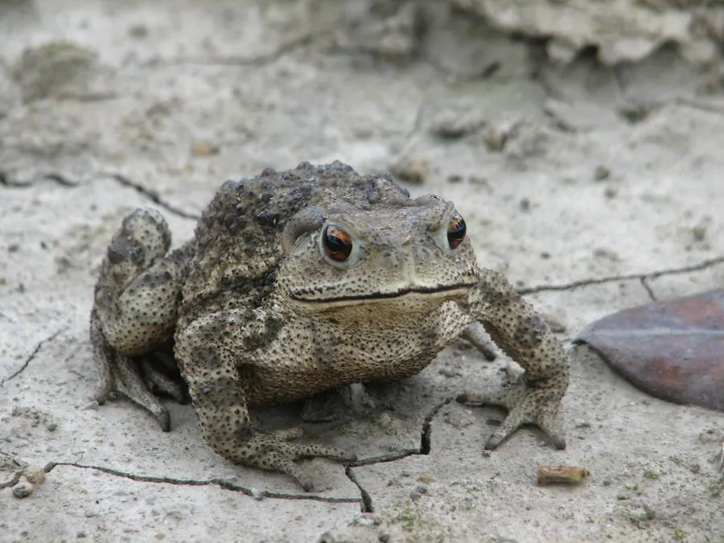

两栖动物 · 动物界
中华蟾蜍 Bufo gargarizans

中国最常见的蟾蜍，皮肤布满疣突，能分泌蟾酥，是农田灭虫的好帮手和传统药材来源，被列入“三有”名录。
- 分类
- 门脊索动物门纲两栖纲目无尾目科蟾蜍科属蟾蜍属
- 栖息环境
- 农田、草地、村舍、沟渠、池塘及潮湿的林缘
- 地理分布
- 中国东部、中部和北部大部分地区，朝鲜半岛亦有分布
- 保护级别
- IUCN 无危（LC）；中国“三有”保护动物
物种志
中华蟾蜍体长 6–12 厘米，雌性明显大于雄性，身体粗壮，皮肤粗糙并密布大小不等的疣突，背面呈灰褐、黄褐或黑褐色，腹面浅黄并有深色斑纹；耳后腺发达，能分泌白色浆液。它的四肢短粗，不善跳跃但爬行稳健，受到威胁时会鼓起身体、抬高臀部，并分泌刺激性浆液驱赶捕食者，这种浆液干燥后即为中药“蟾酥”。
它广泛分布于中国东部与中部，栖息于农田、草地、村舍、沟渠与池塘边，昼伏夜出，捕食蝗虫、蛾类、蝼蛄、蜗牛和蚯蚓，一只成蟾每夜能吃掉大量害虫。繁殖期在 2–5 月，雌蟾产卵数千至万余枚，卵带缠绕在水草上，约 1 周孵化，蝌蚪经 2–3 个月变态上陆。中华蟾蜍被列入中国“三有”保护动物名录，捕捉野生蟾蜍取酥属违法行为。
形态与习性
- 食性蝗虫、蛾类、蝼蛄、蜗牛和蚯蚓
- 体长6–12 cm
- 体重约 50–150 g
- 寿命约 10–15 年
- 繁殖卵生，每窝数千至万余枚，约 1 周孵化
- 活动节律夜行性，白天藏在阴湿处
- 防御疣突和耳后腺分泌蟾酥，具有刺激性
趣味知识
- 中华蟾蜍的耳后腺分泌物干燥后就是中药“蟾酥”，生浆液不能直接接触眼睛。
- 它是农田里的“灭虫能手”，一夜能捕食上百只害虫。
- 蟾蜍蜕下的薄膜状旧皮通常会被自己吃掉。